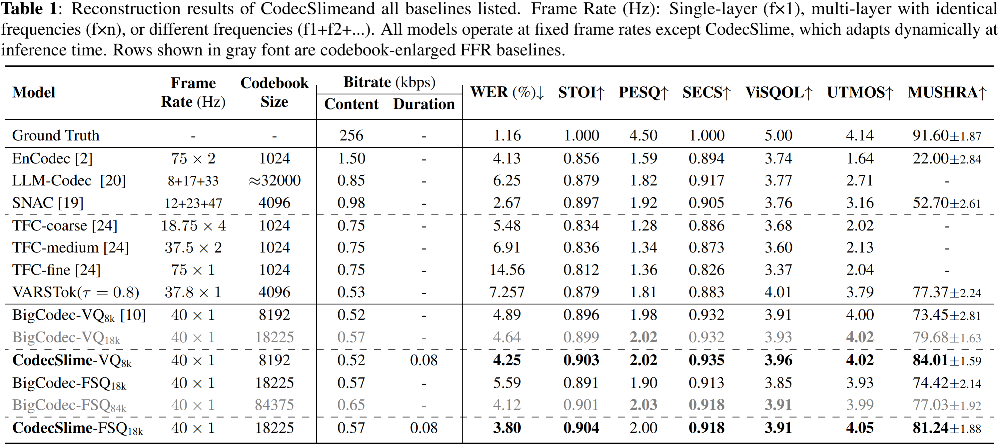
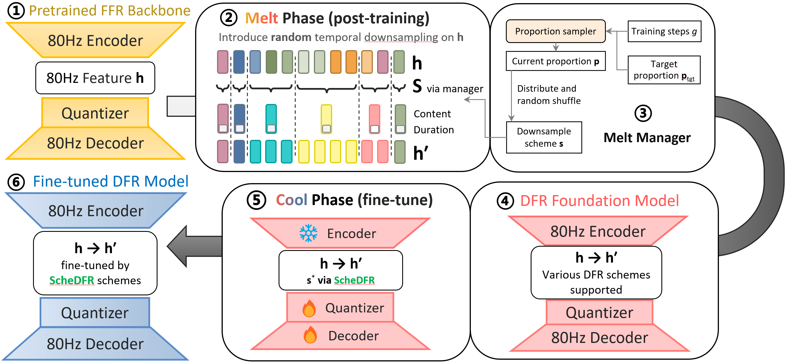
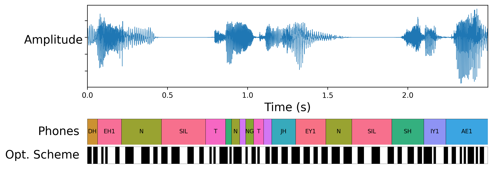
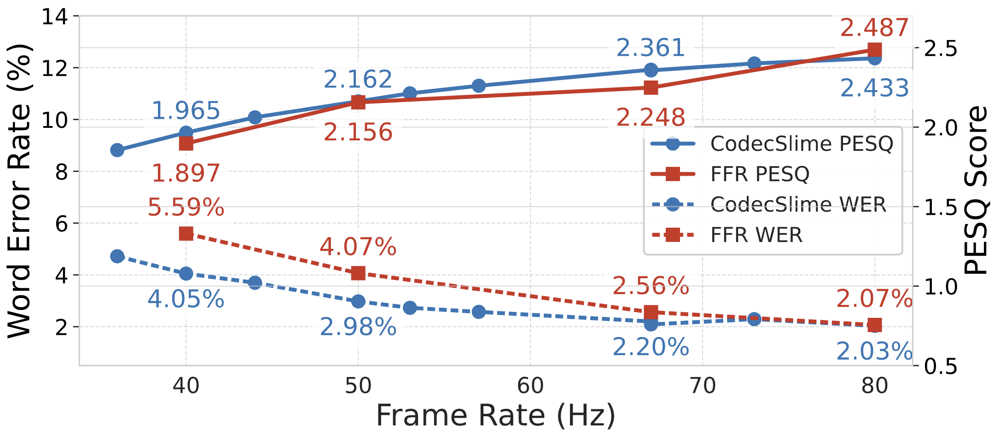

ICASSP 2026 Rebuttal Supplementary Material
This page provides supplementary figures and detailed results referenced in our rebuttal response. For audio demos and the complete project description, please visit the main project page.
Table of Contents
1. Updated Baselines & MUSHRA (Response to Reviewers 305E & 3899)
We have updated Table 1 to include comparisons with two variable frame rate tokens: TFC[24] (Interspeech' 25) and VARSTok[39] (AAAI' 26), and provided new MUSHRA scores for the retrained FSQ model. Additionally, the FSQ model has been updated to match the VQ model in fine-tuning steps (both 110k). Both models demonstrate significant improvements in objective and subjective metrics compared to all baselines.

- Comparison with TFC[24]: At similar bitrates (TFC 0.75kbps vs CodecSlime ~0.6kbps), CodecSlime achieves significantly higher quality (PESQ 2.02 vs 1.28).
- Comparison with VARSTok[39]: Both CodecSlime-VQ8k (84.01±1.59) and CodecSlime-FSQ18k (81.24±1.88) achieve higher MUSHRA scores than VARSTok (77.37±2.24).
- FSQ Comparison: The retrained CodecSlime-FSQ18k (81.24±1.88) shows clear gains over FFR (77.03±1.92).
2. Melt-and-Cool Details (Response to Reviewer 3899)
The Melt-and-Cool recipe adapts an FFR backbone to ScheDFR in two stages:
- Melt Phase (②-④): Introduces random temporal downsampling on encoder features. The proportion of downsampled segments increases gradually according to a target schedule controlled by the Melt Manager. This builds a robust DFR foundation.
- Cool Phase (⑤-⑥): Fine-tunes the model using optimal schemes computed by the DP-based scheduler. We freeze the encoder and update only the quantizer and decoder.

Melt Manager Algorithm: Samples downsampling proportions p from a Dirichlet distribution that evolves from "easy" (mostly no downsampling) to "hard" (target mix) scenarios.
Hyperparameters:
Max rate U=4
Target mix ptgt=[0.1, 0.45, 0.25, 0.2]
Steps Sp=105
Concentration c=30.0
Skip prob ρ=0.5
Output: Proportions p
1. u ← Uniform(0, 1); if u < ρ return None
2. π ← min(g/Sp, 1); d ← π · ptgt
3. dU ← 1 − Σ di; d ← max(d, ε)
4. α ← d · c / (max(1, g/Sp))2.5
5. p ← Dirichlet(α); return p
3. Interpretability & Visualization (Response to Reviewer 1D71)
The figure below visually illustrates how the CodecSlime DFR scheduler operates on two utterances from the LibriTTS test-clean set. The top waveform aligns with the forced phoneme sequence, while the black-and-white bar below depicts the model's predicted frame-reduction pattern. Here, the target downsample rate is 2, and the maximum downsample segment length is 4.


As shown in the figure, long silences or sustained vowels are often assigned longer segments, indicating that the learned schedule effectively captures temporal redundancy. However, we also observe that many segments span across phonetic boundaries, suggesting that optimal compression strategies cannot be directly inferred from linguistic structure alone. Instead, they emerge from fine-grained frame-level acoustic similarity, which is nontrivial to design manually. During the Melt stage, the model is exposed to diverse merging patterns and learns empirically effective segmentations—even if they appear counter-intuitive linguistically. This supports the necessity of our two-stage melt-and-cool training and highlights the strength of scheduling directly in the latent space without relying on handcrafted heuristics.
4. Generalization across Frame Rates (Response to Reviewers 3899 & 1D71)
Fig. 2 in the paper demonstrates that a single CodecSlime model supports multiple inference-time frame rates (e.g., 40Hz to 80Hz) and consistently outperforms FFR baselines that are specifically trained for each rate.
Note that the FFR baselines are a series of separately trained models, each optimized for a fixed frame rate.

References
- [24] Zhang, Hanglei, et al. "Unlocking Temporal Flexibility: Neural Speech Codec with Variable Frame Rate." arXiv preprint arXiv:2505.16845 (2025).
- [39] Zheng, Rui-Chen, et al. "Say More with Less: Variable-Frame-Rate Speech Tokenization via Adaptive Clustering and Implicit Duration Coding." arXiv preprint arXiv:2509.04685 (2025).